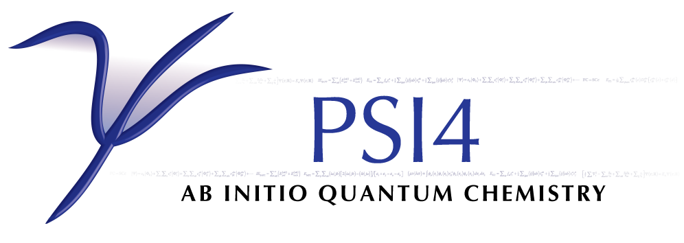

Software
 pdaggerq is a fermionic
computer algebra package for generating equations and code for many-body
quantum chemistry methods, such as coupled cluster theory.
pdaggerq is a fermionic
computer algebra package for generating equations and code for many-body
quantum chemistry methods, such as coupled cluster theory.
 libSDP is a library
of semidefinite programming solvers with C/C++ and Python interfaces.
libSDP is a library
of semidefinite programming solvers with C/C++ and Python interfaces.
hilbert is a plugin to
the Psi4 electronic strucuture package that implements various electronic
structure methods, including the variational two-electron reduced density
matrix (v2RDM) and quantum electrodynamics generalizations of
Hartree-Fock, (time-dependent) density functional theory,
(equation-of-motion) coupled cluster theory, and more.
 Chronus Quantum
is an open-source ab initio computational chemistry software package
that focuses on explicitly time-dependent and relativistic
quantum mechanical methods. The DePrince group develops massively parallel
relativistic coupled-cluster methods in Chronus Quantum.
Chronus Quantum
is an open-source ab initio computational chemistry software package
that focuses on explicitly time-dependent and relativistic
quantum mechanical methods. The DePrince group develops massively parallel
relativistic coupled-cluster methods in Chronus Quantum.
Q-Chem is an ab initio quantum
chemistry software package for fast and accurate simulations of molecular
systems, including electronic and molecular structure, reactivities,
properties, and structure. The DePrince group has implemented the
variational two-electron reduced density matrix (v2RDM) method in Q-Chem.

Psi4 Psi4 is an open-source suite of
ab initio quantum chemistry programs designed for efficient,
high-accuracy simulations of molecular properties. The DePrince group
develops unconventional electronic structure methods as plugins to Psi4
(see, hilbert), and
Prof.~DePrince implemented the density-fitted coupled-cluster algorithm
ini Psi4.